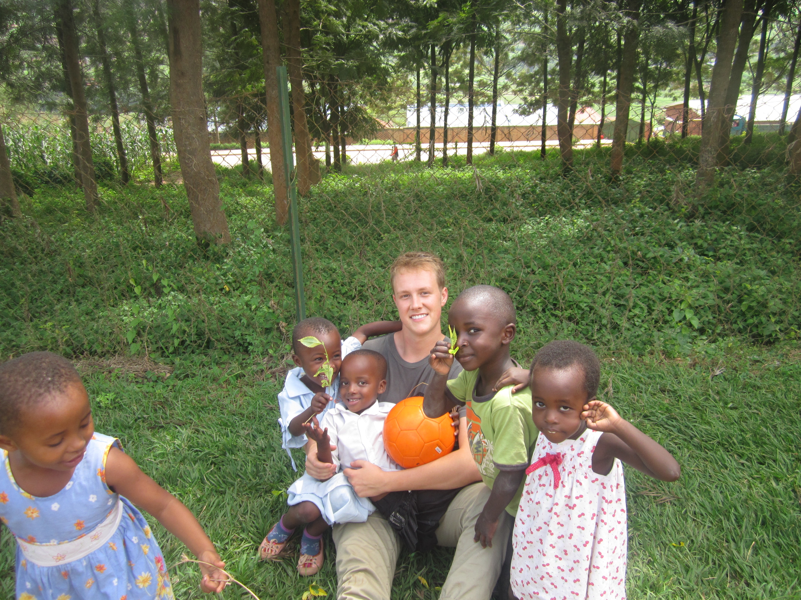
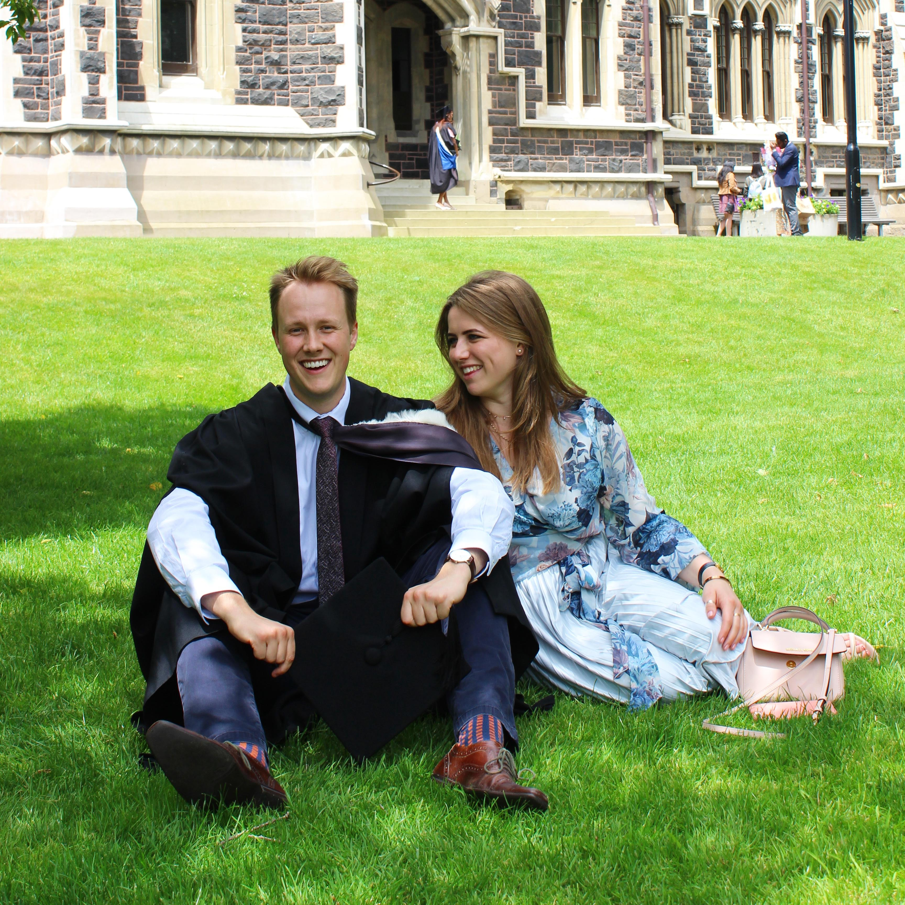
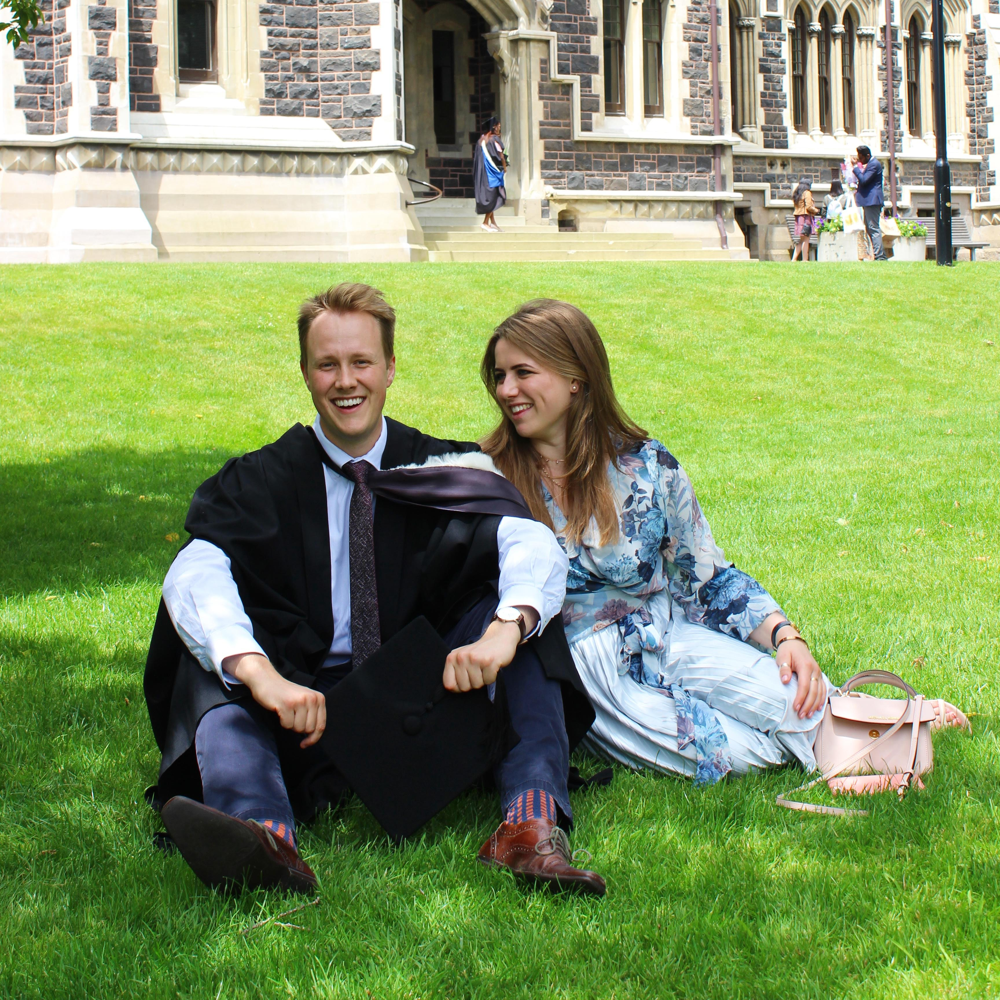

Colton
Randall
🌏
Auckland | New Zealand
Hi! 👋
I'm Colton, the proud dual citizen of two of the most beautiful
countries in the world, Canada - my birthplace, and New Zealand -
where I grew up.
Fast forward to 2013. I had just finished high-school and felt the need to explore the world. I wanted to do something unique, only for the opportunity to volunteer in Rwanda presented itself.
In Rwanda, I taught English at a local orphanage and a nearby preschool, needless to say, it was an enriching, but eye-opening experience. It changed me in more ways than I ever imagined. I of course, then had the urge to go back to Africa three years later for more volunteer work, this time to Kenya, I taught Maths and Physics at a high school in Kibera - the largest slum in Africa. I also worked as a healthcare assistant deeper in the slum to help local doctors treat the residents for Malaria and various respiratory infections.
After my experiences in Africa, I developed an interest in
Healthcare and emerging Biotechnology, which led me to major in
Biochemistry in Dunedin, New Zealand.
During my degree, Genetic Engineering and Bioinformatics played a
big part in the course content, along with the treatment of cancer.
We breifly played around with R and Python scripting, which was my
first introduction to programming, which I took an interest in. The
only complicating factor? At the end of my degree, I had an
opportunity to do an intro flight at a local flight club, where I
found a passion for Aviation...
 

During lockdown, I wanted to be as productive as possible, and fell
back on honing in on my interest in Programming that sparked while
doing Bioinformatics. I tried to learn as much web development
technologies as possible, which continued to become more and more
interesting the better I got. Once lockdown ended, I managed to
secure myself three part-time jobs as a Bioinformatics Research
Assistant. These jobs allowed me to dive into more practical
programming, while continuing to progress through the online
courses, and slowly updated my GitHub profile with small projects.
I decided some formal programming training would benefit me moving
forward, so I enrolled in the Postgraduate Certificate in
Information Technology (PGCertIT) at Auckland University, which was
a condensed period of both theory, and hands-on experience in Web
Development technologies (HTML, CSS, JavaScript, Node.js, SQL) and
Object Oriented Programming in Java. In this course, I achieved two
'Certificate of Outstanding Achievement' awards, and qualified for
the Masters of Information Technology (MInfoTech), where I
specialised in Software Development and Health Informatics.
Through this, I managed to get multiple offers from companies for a
summer internship and I ended up accepting one at Xero. I worked
hard enough to ask to stay on as a Graduate Engineer, which was
approved!
From the Graduate program at Xero I eventually got promoted to
Associate Engineer, and a year later got promoted to an Intermediate
Full-Stack Engineer and have continued to enjoy learning how to
become the best Engineer I can be, in both technical and
non-technical skills.